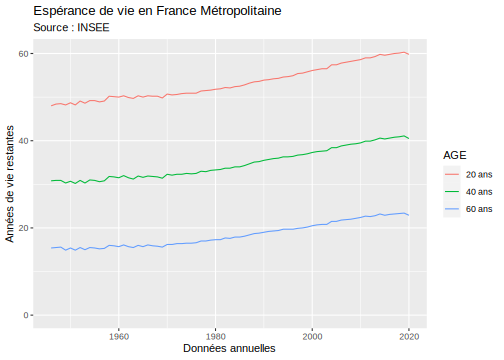
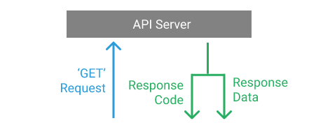

Chapitre 1 Collecter des données à l’aide d’une API
library(knitr)
library(httr)
library(jsonlite)
library(insee)
library(dplyr)
library(lubridate)1.1 Qu’est-ce qu’une API ?
1.1.1 Définitions
On peut partir de la définition suivante
En informatique, API est l’acronyme d’Application Programming Interface, que l’on traduit en français par interface de programmation applicative ou interface de programmation d’application. L’API peut être résumée à une solution informatique qui permet à des applications de communiquer entre elles et de s’échanger mutuellement des services ou des données. Il s’agit en réalité d’un ensemble de fonctions qui facilitent, via un langage de programmation, l’accès aux services d’une application. (Source : Journal du Net)
1.1.2 Domaine d’application
Une API peut remplir des fonctions très diverses :
Dans le domaine d’internet, l’API permet aux développeurs de pouvoir utiliser un programme sans avoir à se soucier du fonctionnement complexe d’une application. Les API peuvent par exemple être utilisées pour déclencher des campagnes publicitaires d’e-mailing de façon automatique sans avoir à passer par la compréhension d’une telle application (c’est le cas avec l’API AdWords de Google, par exemple). On les retrouve aujourd’hui dans de nombreux logiciels, en particulier dans les systèmes d’exploitation, les serveurs d’applications, dans le monde du graphisme (OpenGL), dans les applications SaaS (Office 365, G Suite, Salesforce…), les bases de données, l’open data, etc.(Source : Journal du Net)
1.1.3 Système client-serveur
D’une manière générale, les API supposent un échange d’informations entre un client et un serveur.
Ces échanges d’informations suivent un protocole c’est-à-dire un ensemble de règles. Il existe deux grands protocoles de communication sur lesquels s’adossent les API : Simple Object Access Protocol (SOAP) et Representational State Transfer (REST). Le second s’est désormais largement imposé face au premier car il est plus flexible. Il a donné naissance aux API dites REST ou RESTful (Source : Journal du Net)
1.3 API ou data packages ?
L’utilisation d’API à l’aide des fonctions de base httpr et jsonlite constitue à moyen terme une étape indispensable de la formation d’un data analyste. Mais heureusement elle n’est pas toujours indispensable pour le débutant car plusieurs packages R (ou Python) ont été développées par des programmeurs pour faciliter l’usage des API.
Ces packages executent en pratique les commandes de l’API, mais sans que l’utilisateur ait besoin d’avoir aucune connaissance sur la syntaxe de la fonction GET() qui a collecté les données ni des transformations effectuées sur les résultats pour transformer les données JSON en data.frame ou tibble. La connaissance de ces packages spécialisées offre donc une grosse économie de temps … s’ils ont été bien conçus.
On va prendre comme exemple le package insee mis au point récemment pour faciliter l’accès aux données de cette organisation. La documentation du package est accessible par le lien ci-dessous
https://www.data.gouv.fr/fr/reuses/insee-package-r/
Cette page renvoie vers une “vignette” c’est-à-dire une suite de programmes exemples.
https://inseefr.github.io/R-Insee-Data/
1.3.1 Installation et chargement du package
On commence par installer le package insee ce qui peut prendre quelques minutes mais sera fait une seule fois (sauf mise à jour).
# install.packages("insee")On peut ensuite lancer le package pour l’utiliser avec library() et on ajoute le package tidyverse que l’INSEE semble privilégier pour l’exploitation des données :
library(insee)
library(tidyverse,warn.conflicts = F)1.3.2 Chargement de la liste des tableaux
On commence par télécharger le catalogue des tableaux de données disponibles,à l’aide de la commande get_dataset_list()
catalogue = get_dataset_list()
kable(head(catalogue))| id | Name.fr | Name.en | url | n_series |
|---|---|---|---|---|
| BALANCE-PAIEMENTS | Balance des paiements | Balance of payments | https://www.insee.fr/fr/statistiques/series/103212755 | 197 |
| CHOMAGE-TRIM-NATIONAL | Chômage, taux de chômage par sexe et âge (sens BIT) | Unemployment, unemployment rate and halo by sex and age (ILO) | https://www.insee.fr/fr/statistiques/series/103167923 | 169 |
| CLIMAT-AFFAIRES | Indicateurs synthétiques du climat des affaires | Business climate composite indicators | https://www.insee.fr/fr/statistiques/series/103047029 | 3 |
| CNA-2010-CONSO-MEN | Consommation des ménages - Résultats par produit, fonction et durabilité | Households’ consumption - Results by product, function and durability | https://www.insee.fr/fr/statistiques/series/102331845 | 2247 |
| CNA-2010-CONSO-SI | Dépenses de consommation finale par secteur institutionnel - Résultats par opération et produit | Final consumption expenditure by institutional sectors - Results by transaction and product | https://www.insee.fr/fr/statistiques/series/102809534 | 1391 |
| CNA-2010-CPEB | Comptes de production et d’exploitation par branche | Production and operating accounts by branch | https://www.insee.fr/fr/statistiques/series/102852781 | 2739 |
Chaque tableau comporte un très grand nombre de séries chronologiques parmi lesquelles il faut opérer un choix afin d’extraire exactement ce que l’on veut.
1.3.3 Examen des séries présentes dans un tableau
Une fois que l’on a choisi un tableau, on peut examiner plus en détail les différentes séries qui y sont présentes à l’aide de la commande get_idbank_list(). On va par exemple examiner le contenu de la base de données “DECES-MORTALITE” :
var<-get_idbank_list("DECES-MORTALITE")
str(var)FALSE tibble [1,905 × 32] (S3: tbl_df/tbl/data.frame)
FALSE $ nomflow : chr [1:1905] "DECES-MORTALITE" "DECES-MORTALITE" "DECES-MORTALITE" "DECES-MORTALITE" ...
FALSE $ idbank : chr [1:1905] "000067679" "000067680" "000067681" "000436394" ...
FALSE $ cleFlow : chr [1:1905] "A.NOMBRE_DECES.VALEUR_ABSOLUE.DECES.FM.0.SO.INDIVIDUS.BRUT" "A.TAUX_MORTALITE.TAUX.TXMOR.FM.0.SO.DECES_1000_PERS.BRUT" "A.TAUX_MORTALITE.TAUX.TXMORINF.FM.0.SO.P1000.BRUT" "M.NOMBRE_DECES.VALEUR_ABSOLUE.DECES.FM.0.SO.INDIVIDUS.BRUT" ...
FALSE $ FREQ : chr [1:1905] "A" "A" "A" "M" ...
FALSE $ INDICATEUR : chr [1:1905] "NOMBRE_DECES" "TAUX_MORTALITE" "TAUX_MORTALITE" "NOMBRE_DECES" ...
FALSE $ NATURE : chr [1:1905] "VALEUR_ABSOLUE" "TAUX" "TAUX" "VALEUR_ABSOLUE" ...
FALSE $ REF_AREA : chr [1:1905] "FM" "FM" "FM" "FM" ...
FALSE $ UNIT_MEASURE : chr [1:1905] "INDIVIDUS" "DECES_1000_PERS" "P1000" "INDIVIDUS" ...
FALSE $ CORRECTION : chr [1:1905] "BRUT" "BRUT" "BRUT" "BRUT" ...
FALSE $ SEXE : chr [1:1905] "0" "0" "0" "0" ...
FALSE $ AGE : chr [1:1905] "SO" "SO" "SO" "SO" ...
FALSE $ DEMOGRAPHIE : chr [1:1905] "DECES" "TXMOR" "TXMORINF" "DECES" ...
FALSE $ FREQ_label_fr : chr [1:1905] "Annuelle" "Annuelle" "Annuelle" "Mensuelle" ...
FALSE $ FREQ_label_en : chr [1:1905] "Annual" "Annual" "Annual" "Monthly" ...
FALSE $ INDICATEUR_label_fr : chr [1:1905] "Nombre de décès" "Taux de mortalité" "Taux de mortalité" "Nombre de décès" ...
FALSE $ INDICATEUR_label_en : chr [1:1905] "Number of dead" "Mortality rate" "Mortality rate" "Number of dead" ...
FALSE $ NATURE_label_fr : chr [1:1905] "Valeur absolue" "Taux" "Taux" "Valeur absolue" ...
FALSE $ NATURE_label_en : chr [1:1905] "Absolute value" "Rate" "Rate" "Absolute value" ...
FALSE $ REF_AREA_label_fr : chr [1:1905] "France métropolitaine" "France métropolitaine" "France métropolitaine" "France métropolitaine" ...
FALSE $ REF_AREA_label_en : chr [1:1905] "Metropolitan France" "Metropolitan France" "Metropolitan France" "Metropolitan France" ...
FALSE $ UNIT_MEASURE_label_fr: chr [1:1905] "individus" "nombre de décès pour 1 000 personnes" "pour mille" "individus" ...
FALSE $ UNIT_MEASURE_label_en: chr [1:1905] "individuals" "number of deaths per 1,000 inhabitants" "per thousand" "individuals" ...
FALSE $ CORRECTION_label_fr : chr [1:1905] "Non corrigé" "Non corrigé" "Non corrigé" "Non corrigé" ...
FALSE $ CORRECTION_label_en : chr [1:1905] "Uncorrected" "Uncorrected" "Uncorrected" "Uncorrected" ...
FALSE $ SEXE_label_fr : chr [1:1905] "Ensemble" "Ensemble" "Ensemble" "Ensemble" ...
FALSE $ SEXE_label_en : chr [1:1905] "All" "All" "All" "All" ...
FALSE $ AGE_label_fr : chr [1:1905] "Sans objet" "Sans objet" "Sans objet" "Sans objet" ...
FALSE $ AGE_label_en : chr [1:1905] "Not applicable" "Not applicable" "Not applicable" "Not applicable" ...
FALSE $ DEMOGRAPHIE_label_fr : chr [1:1905] "Décès de tous âges" "Taux de mortalité" "Taux de mortalité infantile" "Décès de tous âges" ...
FALSE $ DEMOGRAPHIE_label_en : chr [1:1905] "Deaths of all ages" "Mortality rate" "Infant mortality rate" "Deaths of all ages" ...
FALSE $ title_fr : chr [1:1905] "Démographie - Décès de tous âges - France métropolitaine" "Démographie - Taux de mortalité pour 1000 habitants - France métropolitaine" "Démographie - Taux de mortalité infantile pour 1000 enfants nés vivants - France métropolitaine" "Démographie - Nombre de décès - France métropolitaine" ...
FALSE $ title_en : chr [1:1905] "Demography - Deaths of all ages - Metropolitan France" "Demography - Mortality rate per 1,000 inhabitants - Metropolitan France" "Demography - Infant mortality rate per 1,000 live births - Metropolitan France" "Demography - Number of deaths - Metropolitan France" ...Le résultat est un tibble comportant 1905 lignes et 39 colonnes. Il correspond en pratique aux 1905 séries chronologiques que l’on peut extraire de la base de données. Chaque série dispose d’un code unique contenu dans la variable idbank.
1.3.4 Extraction d’une série à l’aide de son identifiant
Une première solution pour extraire une série consiste à parcourir le tableau des variables jusqu’à repérer la ligne qui nous intéresse puis à noter son idbank et à extraire la série correspondante à l’aide de la fonction get_insee_idbank(). Par exemple, la première ligne du tableau des variables dont le code est “000436398” va renvoyer un tableau du taux brut de mortalité infantile en France métropolitaine de Janvier 1975 à Décembre 2014. On peut en faire rapidement un graphique avec la fonction plot() de R-Base
don<-get_insee_idbank("000436398")FALSE
|
| | 0%
|
|======================================================================| 100%don<-don[order(don$DATE),1:3]
plot(don$DATE,don$OBS_VALUE,
type ="l",
col="red",
ylab = "Décès 0-1 ans pour 1000 naissances",
xlab = "Données mensuelles",
main = "Evolution de la mortalité infantile en France (1975-2014)",
sub = "Source : Insee")
On remarque que la courbe a des oscillations saisonnières beaucoup moins fortes après 1995 ce qui est sans doute lié à un changement dans le mode de collecte des données plutôt qu’à la réalité.
On note aussi que les données s’arrêtent en 2014 ce qui est bizarre puisque l’API devrait nous donner les chiffres les plus récents. en fait les données plus récentes sont disponibles mais elles font partie d’une autre série de données.
1.3.5 Extraction d’un ensemble de séries d’un même tableau
Supposons que l’on veuille extraire trois courbes décrivant l’espérance de vie des hommes en France métropolitaine, à 20, 40 et 60 ans. Nous lançons alors une requête pour ne retenir dans le tableau des variables que les lignes qui nous intéressent.
sel =
get_idbank_list("DECES-MORTALITE") %>%
filter(SEXE == "1") %>%
filter(FREQ == "A") %>% #données annuelles
filter(REF_AREA == "FM") %>% #France métropolitaine
filter(DEMOGRAPHIE %in% c("ESPV-20","ESPV-40","ESPV-60")) # Espérance de vie
kable(head(sel))| nomflow | idbank | cleFlow | FREQ | INDICATEUR | NATURE | REF_AREA | UNIT_MEASURE | CORRECTION | SEXE | AGE | DEMOGRAPHIE | FREQ_label_fr | FREQ_label_en | INDICATEUR_label_fr | INDICATEUR_label_en | NATURE_label_fr | NATURE_label_en | REF_AREA_label_fr | REF_AREA_label_en | UNIT_MEASURE_label_fr | UNIT_MEASURE_label_en | CORRECTION_label_fr | CORRECTION_label_en | SEXE_label_fr | SEXE_label_en | AGE_label_fr | AGE_label_en | DEMOGRAPHIE_label_fr | DEMOGRAPHIE_label_en | title_fr | title_en |
|---|---|---|---|---|---|---|---|---|---|---|---|---|---|---|---|---|---|---|---|---|---|---|---|---|---|---|---|---|---|---|---|
| DECES-MORTALITE | 001686948 | A.ESPERANCE_VIE.VALEUR_ABSOLUE.ESPV-20.FM.1.SO.ANNEES.BRUT | A | ESPERANCE_VIE | VALEUR_ABSOLUE | FM | ANNEES | BRUT | 1 | SO | ESPV-20 | Annuelle | Annual | Espérance de vie | Life expectancy | Valeur absolue | Absolute value | France métropolitaine | Metropolitan France | nombre d’années | number of years | Non corrigé | Uncorrected | Hommes | Men | Sans objet | Not applicable | Espérance de vie à 20 ans | Life expectancy at 20 years | Espérance de vie à 20 ans - Hommes - France métropolitaine | Life expectancy at 20 years - Men - Metropolitan France |
| DECES-MORTALITE | 001686949 | A.ESPERANCE_VIE.VALEUR_ABSOLUE.ESPV-40.FM.1.SO.ANNEES.BRUT | A | ESPERANCE_VIE | VALEUR_ABSOLUE | FM | ANNEES | BRUT | 1 | SO | ESPV-40 | Annuelle | Annual | Espérance de vie | Life expectancy | Valeur absolue | Absolute value | France métropolitaine | Metropolitan France | nombre d’années | number of years | Non corrigé | Uncorrected | Hommes | Men | Sans objet | Not applicable | Espérance de vie à 40 ans | Life expectancy at 40 years | Espérance de vie à 40 ans - Hommes - France métropolitaine | Life expectancy at 40 years - Men - Metropolitan France |
| DECES-MORTALITE | 001686950 | A.ESPERANCE_VIE.VALEUR_ABSOLUE.ESPV-60.FM.1.SO.ANNEES.BRUT | A | ESPERANCE_VIE | VALEUR_ABSOLUE | FM | ANNEES | BRUT | 1 | SO | ESPV-60 | Annuelle | Annual | Espérance de vie | Life expectancy | Valeur absolue | Absolute value | France métropolitaine | Metropolitan France | nombre d’années | number of years | Non corrigé | Uncorrected | Hommes | Men | Sans objet | Not applicable | Espérance de vie à 60 ans | Life expectancy at 60 years | Espérance de vie à 60 ans - Hommes - France métropolitaine | Life expectancy at 60 years - Men - Metropolitan France |
| DECES-MORTALITE | 010536470 | A.ESPERANCE_VIE.VALEUR_ABSOLUE.ESPV-20.FM.1.SO.ANNEES.BRUT | A | ESPERANCE_VIE | VALEUR_ABSOLUE | FM | ANNEES | BRUT | 1 | SO | ESPV-20 | Annuelle | Annual | Espérance de vie | Life expectancy | Valeur absolue | Absolute value | France métropolitaine | Metropolitan France | nombre d’années | number of years | Non corrigé | Uncorrected | Hommes | Men | Sans objet | Not applicable | Espérance de vie à 20 ans | Life expectancy at 20 years | Espérance de vie à 20 ans - Hommes - France métropolitaine | Life expectancy at 20 years - Men - Metropolitan France |
| DECES-MORTALITE | 010536474 | A.ESPERANCE_VIE.VALEUR_ABSOLUE.ESPV-40.FM.1.SO.ANNEES.BRUT | A | ESPERANCE_VIE | VALEUR_ABSOLUE | FM | ANNEES | BRUT | 1 | SO | ESPV-40 | Annuelle | Annual | Espérance de vie | Life expectancy | Valeur absolue | Absolute value | France métropolitaine | Metropolitan France | nombre d’années | number of years | Non corrigé | Uncorrected | Hommes | Men | Sans objet | Not applicable | Espérance de vie à 40 ans | Life expectancy at 40 years | Espérance de vie à 40 ans - Hommes - France métropolitaine | Life expectancy at 40 years - Men - Metropolitan France |
| DECES-MORTALITE | 010536478 | A.ESPERANCE_VIE.VALEUR_ABSOLUE.ESPV-60.FM.1.SO.ANNEES.BRUT | A | ESPERANCE_VIE | VALEUR_ABSOLUE | FM | ANNEES | BRUT | 1 | SO | ESPV-60 | Annuelle | Annual | Espérance de vie | Life expectancy | Valeur absolue | Absolute value | France métropolitaine | Metropolitan France | nombre d’années | number of years | Non corrigé | Uncorrected | Hommes | Men | Sans objet | Not applicable | Espérance de vie à 60 ans | Life expectancy at 60 years | Espérance de vie à 60 ans - Hommes - France métropolitaine | Life expectancy at 60 years - Men - Metropolitan France |
On découvre que le programme renvoie 6 lignes au lieu de 3. Pourquoi ? Parce que l’INSEE stocke différemment des séries anciennes et des séries récentes. Il faut donc effectuer une requête sur les 4 codes à la fois pour avoir la série la plus longue.
1.3.6 Recupération et nettoyage des données
On récupère les données puis on procède à un petit nettoyage du tableau pour ne conserver que les colonnes utiles.
don = get_insee_idbank(sel$idbank)FALSE
|
| | 0%
|
|================== | 26%
|
|==================================== | 51%
|
|====================================================== | 77%
|
|=========================================================== | 85%
|
|================================================================= | 92%
|
|======================================================================| 100%don2<-don %>% select(ANNEE = DATE, ESPVIE= OBS_VALUE, AGE = TITLE_FR) %>%
mutate(AGE = as.factor(AGE)) %>%
arrange(AGE, ANNEE)
levels(don2$AGE) <- c("20 ans", "40 ans","60 ans")
kable(head(don2))| ANNEE | ESPVIE | AGE |
|---|---|---|
| 1946-01-01 | 48.0 | 20 ans |
| 1947-01-01 | 48.4 | 20 ans |
| 1948-01-01 | 48.5 | 20 ans |
| 1949-01-01 | 48.2 | 20 ans |
| 1950-01-01 | 48.7 | 20 ans |
| 1951-01-01 | 48.2 | 20 ans |
1.3.7 Construction d’un graphique
On peut maintenant construire notre graphique à l’aide par exemple de ggplot2 :
p<-ggplot(don2) +
aes(x=ANNEE,y=ESPVIE, color = AGE) +
geom_line() +
ggtitle(label= "Espérance de vie en France Métropolitaine",
subtitle = "Source : INSEE")+
scale_x_date("Données annuelles") +
scale_y_continuous("Années de vie restantes",limits = c(0,NA))
p
1.3.8 Discussion
Comme on peut le voir, l’utilisation d’un package simplifie l’usage des API mais ne dispense pas d’un apprentissage souvent long pour comprendre toutes les finesses du package (et parfois ses bugs …). Dans le cas du package INSEE, l’utilisation s’avère assez lourde mais permet d’accéder à un nombre considérable de données !
1.4 Exercices
1.4.1 Exercice 1 : utilisation de httr et jsonlite
Déterminer la durée et la date des 10 prochains dates de passage de l’ISS au dessus de Paris (Latitude = 48.86, Longitude = 2.35)
| duration | risetime |
|---|---|
| 426 | 2022-01-14 18:47:32 |
| 631 | 2022-01-14 20:21:47 |
| 653 | 2022-01-14 21:58:15 |
| 651 | 2022-01-14 23:35:18 |
| 653 | 2022-01-15 01:12:10 |
| 567 | 2022-01-15 02:49:11 |
| 269 | 2022-01-15 18:01:17 |
| 607 | 2022-01-15 19:34:14 |
| 653 | 2022-01-15 21:10:20 |
| 649 | 2022-01-15 22:47:21 |
titi <- GET("http://api.open-notify.org/iss-pass.json",
query = list(lat = 40.7, lon = -74, n=3))
titi2 <- fromJSON(rawToChar(titi$content))
titi3 <- titi2$response
titi3$time<-as_datetime(titi3$risetime)
kable(titi3, caption = "Prochains passages de l'ISS au dessus de Paris")1.4.2 Exercice 2 : utilisation du package ‘insee’
Construire à l’aide du package INSEE un graphique de l’évolution mensuelle de l’espérance de vie des femmes à la naissance en France Métropolitaine de 1945 à 2020.
FALSE
|
| | 0%
|
|====================================================== | 77%
|
|======================================================================| 100%
#library(insee)
#library(tidyverse)
sel =
get_idbank_list("DECES-MORTALITE") %>%
filter(SEXE == "2") %>%
filter(FREQ == "A") %>% #données mensuelles
filter(REF_AREA == "FM") %>% #France métropolitaine
filter(DEMOGRAPHIE %in% c("ESPV")) # Espérance de vie
don =
get_insee_idbank(sel$idbank) %>%
select(ANNEE = DATE, ESPVIE= OBS_VALUE) %>%
arrange(ANNEE)
p =
ggplot(don) +
aes(x=ANNEE,y=ESPVIE) +
geom_line(col="red") +
geom_smooth(method= "lm",col="blue")+
ggtitle(label= "Espérance de vie à la naissance des femmes en France Métropolitaine",
subtitle = "Source : INSEE")+
scale_x_date("Année", limits =as.Date(c("1940-01-01","2020-01-01"))) +
scale_y_continuous("Durée de vie moyenne")
p1.4.3 Exercice 3 : Osrm
On se propose de calculer la distance routière Paris Rouen en temps et en kilomètre à l’aide de l’API osrm.
Paris (48.863186 ; 2.339754) Rouen (49.443232.; 1.099971)
Vous pouvez effectuer le calcul :
- soit avec l’API osrm
http://project-osrm.org/docs/v5.15.2/api/#general-options
- soit avec le package R osrm de Thimotee Giraud qui émule l’API
1.4.4 Exercice 4 : Exploration de nouvelles API
Vous devez identifier une API intéressante, accessible soit par un package R, soit par une combinaison de comandes GET() puis montrer son utilisation à l’aide d’un exemple de création d’un tableau puis d’un graphique.
Vous présenterez le résultat sous la forme d’un document markdown d’une à deux pages maximum.
1.2 Comment utiliser une API dans R ?
Le métier de data analyst implique presque nécessairement l’emploi d’API. Les langages de programmation R ou Python ont donc l’un comme l’autre mis au point des packages pour faciliter l’envoi de requêtes sur des serveurs dotés d’API. A titre d’introduction, nous allons reprendre (et traduire en français) quelques extraits d’un billet proposé par un étudiant en doctorat de biostatistiques à l’université de Californie San Diego.
1.2.1 Pourquoi utiliser des API ?
Source : Traduction française d’un billet de Pascual C., 2020
1.2.2 Installer les packages jsonlite et httr
Pour travailler avec des API dans R, nous devons intégrer certaines bibliothèques (library). Ces bibliothèques prennent toutes les complexités d’une requête d’API et les enveloppent dans des fonctions que nous pouvons utiliser dans des lignes de code uniques. Les bibliothèques R que nous utiliserons sont
httretjsonlite. Elles remplissent des rôles différents dans notre introduction des API, mais les deux sont essentiels.Si vous ne disposez pas de ces bibliothèques dans votre console R ou RStudio, vous devez d’abord les télécharger.1.2.3 Structure d’une requête
Une requête adressé à une API va suivre le schéma suivant :

Il existe plusieurs types de requêtes que l’on peut adresser à un serveur API. Pour nos besoins, nous allons simplement demander des données, ce qui correspond à une demande GET. Les autres types de requêtes sont POST et PUT, mais nous n’avons pas à nous en préoccuper dans l’immédiat
Afin de créer une requête GET, nous devons utiliser la fonction GET() de la bibliothèque
httr. La fonction GET() nécessite une URL, qui spécifie l’adresse du serveur auquel la demande doit être envoyée. A titre d’exemple, C. Pascual propose de travailler avec l’API Open Notify, qui donne accès à des données sur divers projets de la NASA. À l’aide de l’API Open Notify, nous pouvons notamment en savoir plus sur l’emplacement de la Station spatiale internationale et sur le nombre de personnes actuellement dans l’espace.Notre programme télécharge les données disponibles à l’adresse du serveur et les stocke dans un objet auquel on peut donner le nom que l’on souhaite, par exemple toto
Lorsqu’on affiche la réponse, on obtient ici quatre informations :
On pourrait également en savoir plus en tapant la commande str() qui nous indique que le résultat est une liste comportant 10 branches et de nombreuses sous-branches :
La branche qui nous intéresse le plus est content puisque c’est celle qui contient les données.
1.2.4 Extraction des données
Les données contenues dans la réponse ont été stockées au format JSON (JavaScript Object Notation) qui est devenu un standard pour les échanges de données. Sans entrer dans le détail de ce langage, on retiendra qu’il va falloir convertir les données JSON dans un format de tableau lisible par R ce qui se fait ici en deux étapes.
Tout d’abord extraire le champ content et le convertir en mode caractère :
Puis convertir ces données de type JSON en données utilisables par R à l’aide de la fonction fromJson() du package
jsonlite()On obtient finalement une liste de trois éléments dont le dernier est un data.frame décrivant les astronautes présents dans la station spatiale internationale au moment de l’execution du programme.
1.2.5 API et mise à jour en temps réel
Sur le site web du billet proposé par C. Pascual en février 2020, on trouve une autre liste ne comportant que 6 passagers et avec des noms totalement différents :
En effet, l’API renvoie les résultats au moment de l’execution de la fonction GET() ce qui correspond à février 2020 pour le billet de blog. Or, les astronautes sont remplacés au plus tous les six mois ce qui explique que tous les noms soient différents un an après.
NB : Cet exemple permet de mettre en évidence une fonction centrale des API qui est la mise à jour en temps réel des données !
1.2.6 API et requête paramétrique
L’exemple précédent consistait à télécharger la totalité d’un tableau et ne demandait donc pas de paramètres particuliers. Mais il peut aussi arriver (par exemple si une base de données est très volumineuse) que l’on précise à l’aide de paramètres ce que l’on veut précisément télécharger.
A titre d’exemple, C. Pascual propose d’utiliser une autre API de la NASA intitulée ISS Pass Time qui permet de savoir à quel moment la station ISS passera au dessus d’un certain point du globe.
L’exemple choisi par C.Pascual est la recherche des trois prochaines dates de passage de l’ISS au dessus de New York dont les coordonnées de latitude et de longitude sont 40.7 et -74.0 :
Le résultat paraît à première vue assez déconcertant. Mais la lecture de la documentation de l’API indique que les deux variables du tableau correspondent respectivement :
Si l’on veut se ramener à une date précise, il faut donc convertir ce temps à l’aide d’une fonction R. Le plus simple est pour cela d’utiliser la fonction as_datetime() du package
lubridate.